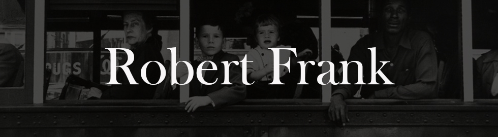

I would argue that when many people think of the genre, what first pops into their heads is the style of Garry Winogrand, and he would probably be turning in his grave right now given that he famously hated the term.
The energetic and restless
Winogrand incessantly captured
daily life in New York City and
America from the ’50s to the
early ‘80s, and his body of work
defined the post-World War II era
America, filled with opulence and
power, but mixed with a deep
underlying anxiety.
Born in 1928 as a Bronx native,
Winogrand studied photography
at the New School under Alexey
Brodovitch in 1949, who taught
him to rely on his instinct rather
than classical techniques, and it is
clear that this advice stuck and
helped him define his style. His
work was documentary but
spontaneous in nature, and
focused on the human condition.
His work was documentary but spontaneous in nature, and focused on the human condition.
Winogrand often employed tilted horizons and angles to fit more into the scene, while removing a sense of perfection and overt design. This helped his work feel more real, dynamic, anxiety ridden, and in the moment. It seems as if he purposely sought to distance himself from a more classical and orderly style and this helped mimic the spontaneous and chaotic nature of the moments and subjects that he was attracted to.
While he photographed in a
quick and spontaneous way,
when evaluating his work, it is
clear that he had a sharp focus
with clear narratives. He
published four books in his
lifetime, Women are Beautiful,
The Animals, Public Relations,
and Stock Photographs: The
Fort Worth Fat Stock Show
and Rodeo. However, these
four bodies of work do not
do justice to the full scope
of his life’s work and vision,
and it was actually the
posthumous publications of
his work that address this.
Jeff Rosenheim, curator in
charge of the Metropolitan
Museum of Art’s department
of photographs, stated that,
“He was a collector, like
Whitman, of experiences,”
and “I think there is this anxiety
in the pictures that suggests
something else is going on,
which was pervasive in the
culture at the time… It’s
self-evident in the out-of-
control-ness that he allows into
his pictures and how they don’t
seem to have a center.” The
content, the form, the design,
and the focus mixed with
ambiguity of the images all
came together to portray the underlying feelings of the
culture at the time.
He was a collector of experiences...
Winogrand paved a new way for photography to be considered as an art, but he did this with snapshots and without the delicate and formal nature that many photographers have used to compose their works. Winogrand went by his gut and his art revealed itself over time through the body of work, a formal build up of a narrative between hundreds of thousands of snapshots. Real life was his clay and he was constantly refining, moulding, and building on it each day.
Winogrand went by his gut and his art revealed itself over time through the body of work...
Even with this overarching
narrative, Winogrand
understood that photographs
could be ambiguous and open
to many interpretations. It is
fascinating how you could take
any image away from the group
and have it interpreted in
completely different ways. You
could organize sets of the
works into many different ideas
and themes, opening the
images to even further
interpretation. But the entire
body itself has a sharp-minded
and obsessive focus on
American life and culture.
Winogrand’s images were less
perfect and the picturesque
scene became less important
to him over time. Winogrand
seemed to grasp at imperfect
moments in time. After all,
perfection was rarely a part of
real life. Elegant people were a
major part of his focus, but he
had a way of photographing
them that seemed to strip the
elegance away, to reveal the
fears and troubles that lurked
beneath the surface.
Winogrand seemed to grasp at imperfect moments in time.
Winogrand understood that he could tell a complex story through his work, and part of the story was about him. Through showing other people’s stories, he revealed his own internal struggles, fears, and his pondering of life’s questions.
